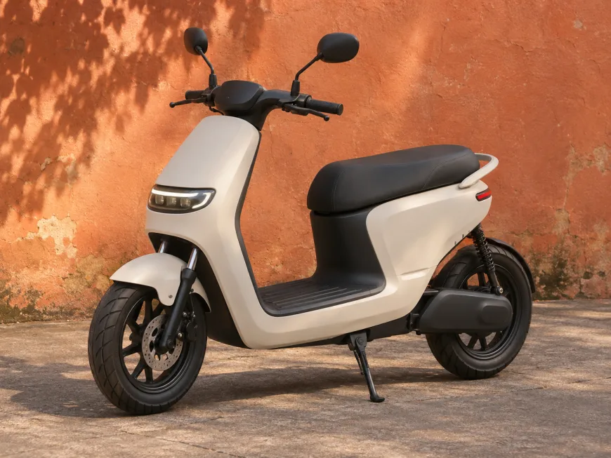
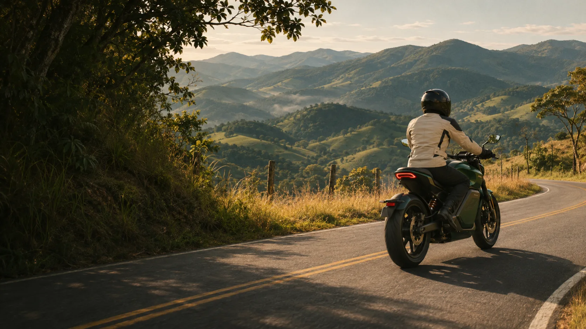
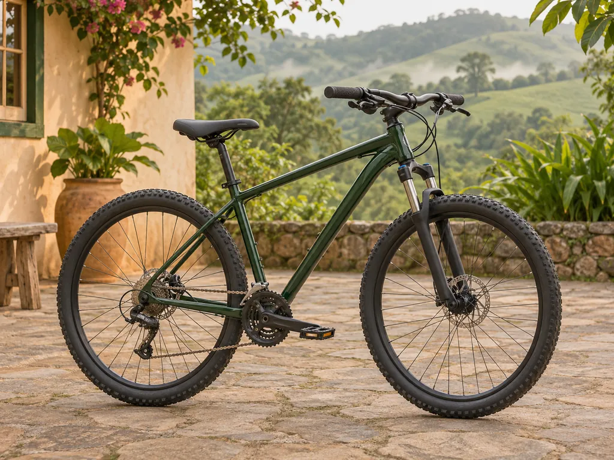
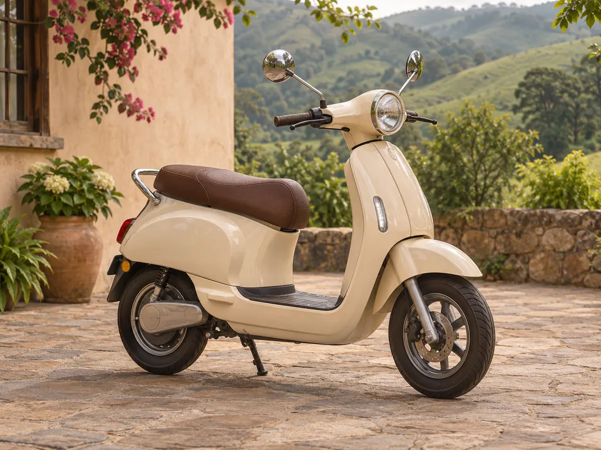
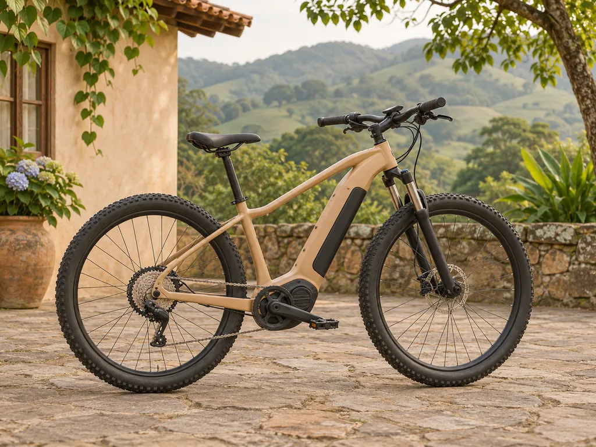
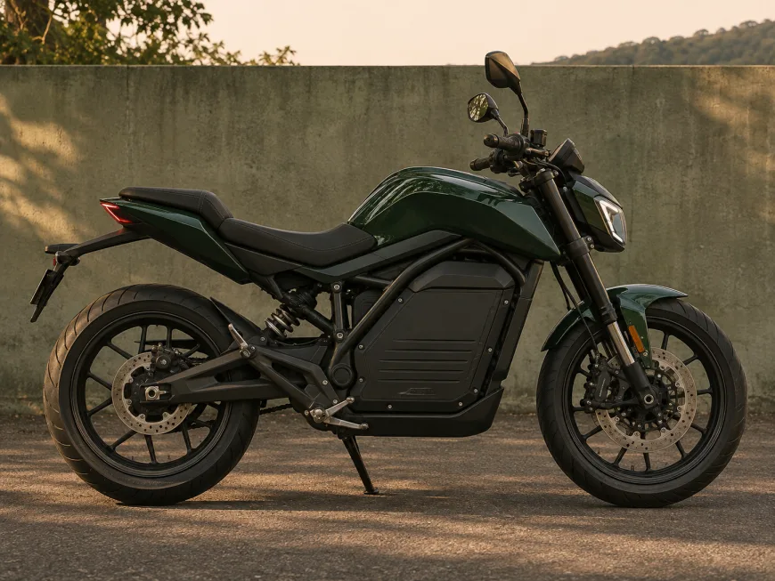
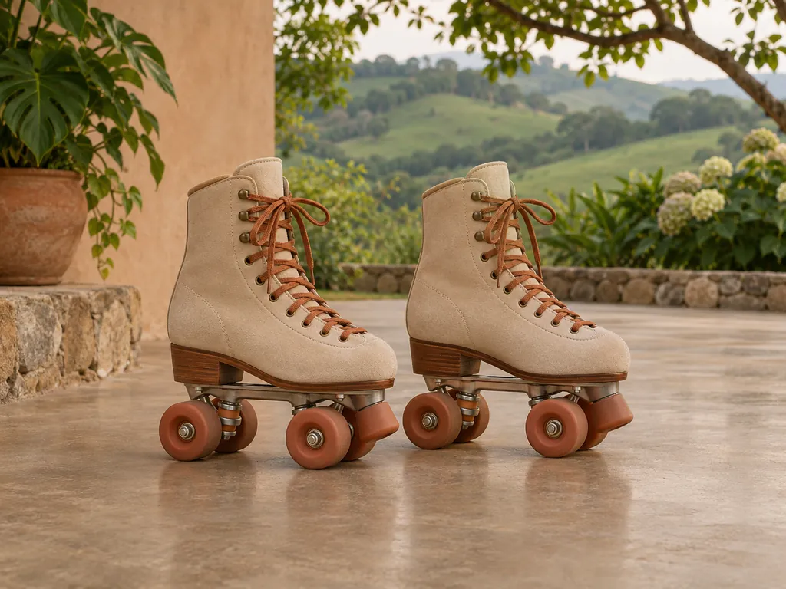
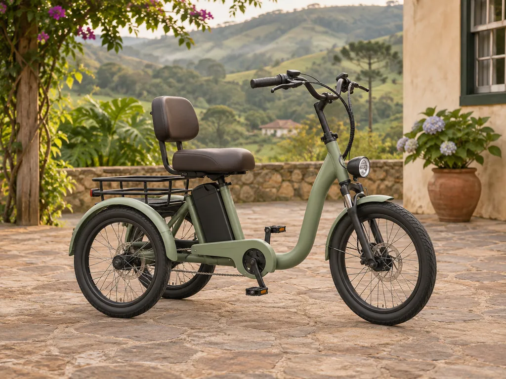

Scooter urbana
30 min a partir de R$ 65

Extrema, Minas Gerais
De meia hora de scooter a uma manhã de bicicleta. Escolha seu passeio e veja o preço do pacote.
Catálogo de locação
Preços de teste por pacote. Veja os equipamentos incluídos e as condições de cada passeio.

30 min a partir de R$ 65

1 h a partir de R$ 40

1 h a partir de R$ 40

1 h a partir de R$ 120

1 h a partir de R$ 80

2 h a partir de R$ 190

1 h a partir de R$ 40

30 min a partir de R$ 30

1 h a partir de R$ 115
A proposta começa pelo passeio e abre espaço para quem se interessar pela compra.

Uma scooter na recepção chama a atenção. Um QR aproxima o hóspede do passeio. Veja como hotéis e lojas poderiam participar do piloto.
Conhecer o quiosque